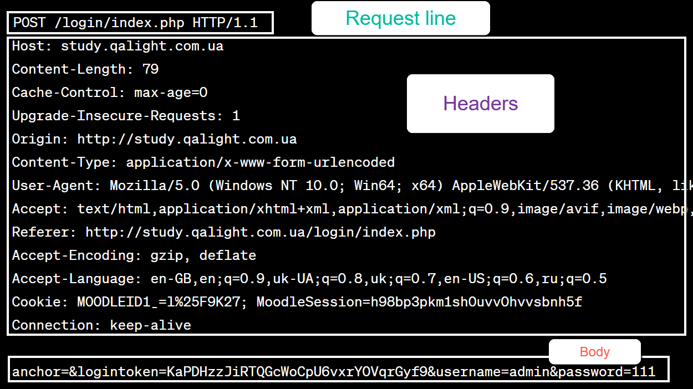
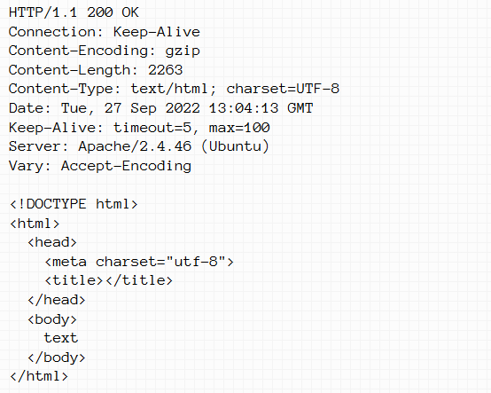

Процесс при вводе URL и нажатии Enter
- DNS-запрос:
- Проверка кеша браузера: Браузер сначала проверяет свой локальный DNS-кеш, чтобы
узнать, есть ли уже закэшированный IP-адрес для введенного доменного имени. Если он есть, дальнейшие
запросы не требуются, и браузер сразу использует этот IP-адрес.
- Проверка кеша операционной системы: Если в кеше браузера нет записи, запрос
передается операционной системе. Операционная система проверяет свой DNS-кеш (например, hosts файл в
Windows или аналогичные файлы в Unix-системах).
- Запрос к локальному DNS-серверу: Если операционная система не находит IP-адрес, она
отправляет запрос на ближайший DNS-сервер, часто это DNS-сервер вашего интернет-провайдера (ISP).
Этот сервер также может иметь свой кеш, который он проверяет.
- Рекурсивный DNS-запрос: Если локальный DNS-сервер не имеет закэшированной записи,
он начинает рекурсивный поиск, направляя запросы вверх по иерархии DNS-серверов:
- Корневые DNS-серверы: Если локальный сервер не имеет записи, он отправляет
запрос одному из корневых DNS-серверов. Корневой сервер не знает конкретный IP-адрес, но он
перенаправляет запрос на сервер, отвечающий за доменные зоны верхнего уровня (TLD), такие
как .com, .org, .ru.
- TLD-серверы: Сервер зоны верхнего уровня, например, для зоны .com, получает
запрос и возвращает ссылку на DNS-сервер, который управляет доменным именем второго уровня,
например, example.com.
- Авторитетный DNS-сервер: Этот сервер содержит окончательную информацию о
домене. Он возвращает IP-адрес, соответствующий запрашиваемому доменному имени.
- Передача IP-адреса обратно: После того как авторитетный DNS-сервер вернет IP-адрес,
он передается назад по цепочке серверов до локального DNS-сервера, который может закэшировать эту
информацию для будущих запросов, и затем передается операционной системе.
- Использование IP-адреса браузером: Операционная система передает полученный
IP-адрес браузеру, который затем использует его для установления TCP-соединения с сервером.
- Кеширование: Все участвующие в процессе системы (браузер, операционная система,
локальный DNS-сервер) могут кешировать полученный IP-адрес для ускорения последующих запросов к тому
же доменному имени.
- Установление соединения: Получив IP-адрес, браузер устанавливает TCP-соединение с сервером
по этому IP через порт 80 (HTTP) или 443 (HTTPS).
- Отправка HTTP-запроса: После установления соединения браузер отправляет HTTP-запрос на
сервер, содержащий метод (например, GET), URL, заголовки и, возможно, данные тела запроса.
- Обработка на сервере: Сервер принимает запрос и передает его соответствующему обработчику
(например, PHP, Python, Java), который выполняет необходимые действия (например, получение данных из базы
данных) и формирует HTTP-ответ.
- Получение ответа: Браузер получает ответ от сервера, содержащий статус, заголовки и тело
ответа (например, HTML, CSS, JS).
- Отображение страницы: Браузер парсит HTML, загружает связанные ресурсы (CSS, JS,
изображения), и отрисовывает веб-страницу на экране.

